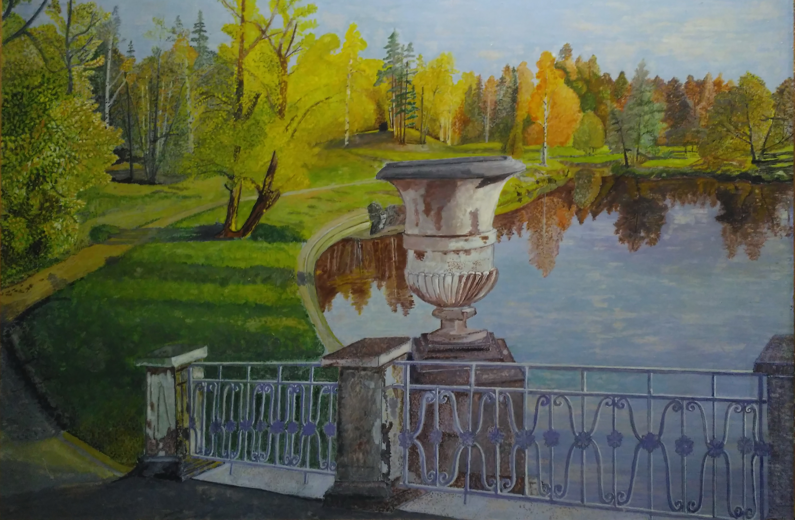

Закружилась листва золотая
В розоватой воде на пруду,
Словно бабочек легкая стая
С замираньем летит на звезду.
Я сегодня влюблен в этот вечер,
Близок сердцу желтеющий дол.
Отрок-ветер по самые плечи
Заголил на берёзке подол.
И в душе и в долине прохлада,
Синий сумрак как стадо овец,
За калиткою смолкшего сада
Прозвенит и замрет бубенец.
Я ещё никогда бережливо
Так не слушал разумную плоть,
Хорошо бы, как ветками ива,
Опрокинуться в розовость вод.
Хорошо бы, на стог улыбаясь,
Мордой месяца сено жевать...
Где ты, где, моя тихая радость,
Всё любя, ничего не желать?
С.Есенин
